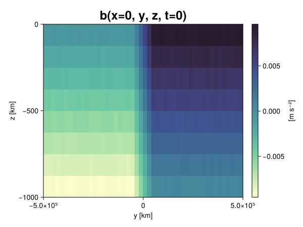
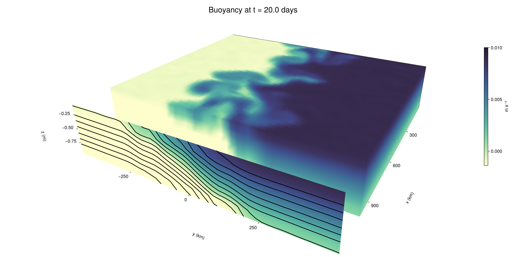

Baroclinic adjustment
In this example, we simulate the evolution and equilibration of a baroclinically unstable front.
Install dependencies
First let's make sure we have all required packages installed.
using Pkg
pkg"add Oceananigans, CairoMakie"using Oceananigans
using Oceananigans.UnitsGrid
We use a three-dimensional channel that is periodic in the x direction:
Lx = 1000kilometers # east-west extent [m]
Ly = 1000kilometers # north-south extent [m]
Lz = 1kilometers # depth [m]
grid = RectilinearGrid(size = (48, 48, 8),
x = (0, Lx),
y = (-Ly/2, Ly/2),
z = (-Lz, 0),
topology = (Periodic, Bounded, Bounded))48×48×8 RectilinearGrid{Float64, Periodic, Bounded, Bounded} on CPU with 3×3×3 halo
├── Periodic x ∈ [0.0, 1.0e6) regularly spaced with Δx=20833.3
├── Bounded y ∈ [-500000.0, 500000.0] regularly spaced with Δy=20833.3
└── Bounded z ∈ [-1000.0, 0.0] regularly spaced with Δz=125.0Model
We built a HydrostaticFreeSurfaceModel with an ImplicitFreeSurface solver. Regarding Coriolis, we use a beta-plane centered at 45° South.
model = HydrostaticFreeSurfaceModel(; grid,
coriolis = BetaPlane(latitude = -45),
buoyancy = BuoyancyTracer(),
tracers = :b,
momentum_advection = WENO(),
tracer_advection = WENO())HydrostaticFreeSurfaceModel{CPU, RectilinearGrid}(time = 0 seconds, iteration = 0)
├── grid: 48×48×8 RectilinearGrid{Float64, Periodic, Bounded, Bounded} on CPU with 3×3×3 halo
├── timestepper: QuasiAdamsBashforth2TimeStepper
├── tracers: b
├── closure: Nothing
├── buoyancy: BuoyancyTracer with ĝ = NegativeZDirection()
├── free surface: ImplicitFreeSurface with gravitational acceleration 9.80665 m s⁻²
│ └── solver: FFTImplicitFreeSurfaceSolver
├── advection scheme:
│ ├── momentum: WENO reconstruction order 5
│ └── b: WENO reconstruction order 5
└── coriolis: BetaPlane{Float64}We start our simulation from rest with a baroclinically unstable buoyancy distribution. We use ramp(y, Δy), defined below, to specify a front with width Δy and horizontal buoyancy gradient M². We impose the front on top of a vertical buoyancy gradient N² and a bit of noise.
"""
ramp(y, Δy)
Linear ramp from 0 to 1 between -Δy/2 and +Δy/2.
For example:
```
y < -Δy/2 => ramp = 0
-Δy/2 < y < -Δy/2 => ramp = y / Δy
y > Δy/2 => ramp = 1
```
"""
ramp(y, Δy) = min(max(0, y/Δy + 1/2), 1)
N² = 1e-5 # [s⁻²] buoyancy frequency / stratification
M² = 1e-7 # [s⁻²] horizontal buoyancy gradient
Δy = 100kilometers # width of the region of the front
Δb = Δy * M² # buoyancy jump associated with the front
ϵb = 1e-2 * Δb # noise amplitude
bᵢ(x, y, z) = N² * z + Δb * ramp(y, Δy) + ϵb * randn()
set!(model, b=bᵢ)Let's visualize the initial buoyancy distribution.
using CairoMakie
# Build coordinates with units of kilometers
x, y, z = 1e-3 .* nodes(grid, (Center(), Center(), Center()))
b = model.tracers.b
fig, ax, hm = heatmap(view(b, 1, :, :),
colormap = :deep,
axis = (xlabel = "y [km]",
ylabel = "z [km]",
title = "b(x=0, y, z, t=0)",
titlesize = 24))
Colorbar(fig[1, 2], hm, label = "[m s⁻²]")
fig
Simulation
Now let's build a Simulation.
simulation = Simulation(model, Δt=20minutes, stop_time=20days)Simulation of HydrostaticFreeSurfaceModel{CPU, RectilinearGrid}(time = 0 seconds, iteration = 0)
├── Next time step: 20 minutes
├── Elapsed wall time: 0 seconds
├── Wall time per iteration: NaN days
├── Stop time: 20 days
├── Stop iteration : Inf
├── Wall time limit: Inf
├── Callbacks: OrderedDict with 4 entries:
│ ├── stop_time_exceeded => Callback of stop_time_exceeded on IterationInterval(1)
│ ├── stop_iteration_exceeded => Callback of stop_iteration_exceeded on IterationInterval(1)
│ ├── wall_time_limit_exceeded => Callback of wall_time_limit_exceeded on IterationInterval(1)
│ └── nan_checker => Callback of NaNChecker for u on IterationInterval(100)
├── Output writers: OrderedDict with no entries
└── Diagnostics: OrderedDict with no entriesWe add a TimeStepWizard callback to adapt the simulation's time-step,
conjure_time_step_wizard!(simulation, IterationInterval(20), cfl=0.2, max_Δt=20minutes)Also, we add a callback to print a message about how the simulation is going,
using Printf
wall_clock = Ref(time_ns())
function print_progress(sim)
u, v, w = model.velocities
progress = 100 * (time(sim) / sim.stop_time)
elapsed = (time_ns() - wall_clock[]) / 1e9
@printf("[%05.2f%%] i: %d, t: %s, wall time: %s, max(u): (%6.3e, %6.3e, %6.3e) m/s, next Δt: %s\n",
progress, iteration(sim), prettytime(sim), prettytime(elapsed),
maximum(abs, u), maximum(abs, v), maximum(abs, w), prettytime(sim.Δt))
wall_clock[] = time_ns()
return nothing
end
add_callback!(simulation, print_progress, IterationInterval(100))Diagnostics/Output
Here, we save the buoyancy, $b$, at the edges of our domain as well as the zonal ($x$) average of buoyancy.
u, v, w = model.velocities
ζ = ∂x(v) - ∂y(u)
B = Average(b, dims=1)
U = Average(u, dims=1)
V = Average(v, dims=1)
filename = "baroclinic_adjustment"
save_fields_interval = 0.5day
slicers = (east = (grid.Nx, :, :),
north = (:, grid.Ny, :),
bottom = (:, :, 1),
top = (:, :, grid.Nz))
for side in keys(slicers)
indices = slicers[side]
simulation.output_writers[side] = JLD2OutputWriter(model, (; b, ζ);
filename = filename * "_$(side)_slice",
schedule = TimeInterval(save_fields_interval),
overwrite_existing = true,
indices)
end
simulation.output_writers[:zonal] = JLD2OutputWriter(model, (; b=B, u=U, v=V);
filename = filename * "_zonal_average",
schedule = TimeInterval(save_fields_interval),
overwrite_existing = true)JLD2OutputWriter scheduled on TimeInterval(12 hours):
├── filepath: ./baroclinic_adjustment_zonal_average.jld2
├── 3 outputs: (b, u, v)
├── array type: Array{Float64}
├── including: [:grid, :coriolis, :buoyancy, :closure]
├── file_splitting: NoFileSplitting
└── file size: 30.7 KiBNow we're ready to run.
@info "Running the simulation..."
run!(simulation)
@info "Simulation completed in " * prettytime(simulation.run_wall_time)[ Info: Running the simulation...
[ Info: Initializing simulation...
[00.00%] i: 0, t: 0 seconds, wall time: 28.799 seconds, max(u): (0.000e+00, 0.000e+00, 0.000e+00) m/s, next Δt: 20 minutes
[ Info: ... simulation initialization complete (27.458 seconds)
[ Info: Executing initial time step...
[ Info: ... initial time step complete (24.822 seconds).
[06.94%] i: 100, t: 1.389 days, wall time: 41.939 seconds, max(u): (1.287e-01, 1.161e-01, 1.574e-03) m/s, next Δt: 20 minutes
[13.89%] i: 200, t: 2.778 days, wall time: 1.569 seconds, max(u): (2.154e-01, 1.622e-01, 1.741e-03) m/s, next Δt: 20 minutes
[20.83%] i: 300, t: 4.167 days, wall time: 1.380 seconds, max(u): (2.965e-01, 2.049e-01, 1.658e-03) m/s, next Δt: 20 minutes
[27.78%] i: 400, t: 5.556 days, wall time: 1.299 seconds, max(u): (3.511e-01, 2.690e-01, 1.605e-03) m/s, next Δt: 20 minutes
[34.72%] i: 500, t: 6.944 days, wall time: 1.324 seconds, max(u): (4.303e-01, 3.689e-01, 1.595e-03) m/s, next Δt: 20 minutes
[41.67%] i: 600, t: 8.333 days, wall time: 1.390 seconds, max(u): (5.435e-01, 5.552e-01, 2.045e-03) m/s, next Δt: 20 minutes
[48.61%] i: 700, t: 9.722 days, wall time: 1.224 seconds, max(u): (7.355e-01, 8.851e-01, 3.065e-03) m/s, next Δt: 20 minutes
[55.56%] i: 800, t: 11.111 days, wall time: 1.450 seconds, max(u): (1.124e+00, 1.181e+00, 4.828e-03) m/s, next Δt: 20 minutes
[62.50%] i: 900, t: 12.500 days, wall time: 1.362 seconds, max(u): (1.362e+00, 1.196e+00, 4.422e-03) m/s, next Δt: 20 minutes
[69.44%] i: 1000, t: 13.889 days, wall time: 1.275 seconds, max(u): (1.349e+00, 1.194e+00, 4.056e-03) m/s, next Δt: 20 minutes
[76.39%] i: 1100, t: 15.278 days, wall time: 1.172 seconds, max(u): (1.326e+00, 1.294e+00, 4.564e-03) m/s, next Δt: 20 minutes
[83.33%] i: 1200, t: 16.667 days, wall time: 1.239 seconds, max(u): (1.315e+00, 1.340e+00, 3.744e-03) m/s, next Δt: 20 minutes
[90.28%] i: 1300, t: 18.056 days, wall time: 1.318 seconds, max(u): (1.504e+00, 1.183e+00, 4.084e-03) m/s, next Δt: 20 minutes
[97.22%] i: 1400, t: 19.444 days, wall time: 1.176 seconds, max(u): (1.497e+00, 1.084e+00, 3.508e-03) m/s, next Δt: 20 minutes
[ Info: Simulation is stopping after running for 1.254 minutes.
[ Info: Simulation time 20 days equals or exceeds stop time 20 days.
[ Info: Simulation completed in 1.255 minutes
Visualization
All that's left is to make a pretty movie. Actually, we make two visualizations here. First, we illustrate how to make a 3D visualization with Makie's Axis3 and Makie.surface. Then we make a movie in 2D. We use CairoMakie in this example, but note that using GLMakie is more convenient on a system with OpenGL, as figures will be displayed on the screen.
using CairoMakieThree-dimensional visualization
We load the saved buoyancy output on the top, north, and east surface as FieldTimeSerieses.
filename = "baroclinic_adjustment"
sides = keys(slicers)
slice_filenames = NamedTuple(side => filename * "_$(side)_slice.jld2" for side in sides)
b_timeserieses = (east = FieldTimeSeries(slice_filenames.east, "b"),
north = FieldTimeSeries(slice_filenames.north, "b"),
top = FieldTimeSeries(slice_filenames.top, "b"))
B_timeseries = FieldTimeSeries(filename * "_zonal_average.jld2", "b")
times = B_timeseries.times
grid = B_timeseries.grid48×48×8 RectilinearGrid{Float64, Periodic, Bounded, Bounded} on CPU with 3×3×3 halo
├── Periodic x ∈ [0.0, 1.0e6) regularly spaced with Δx=20833.3
├── Bounded y ∈ [-500000.0, 500000.0] regularly spaced with Δy=20833.3
└── Bounded z ∈ [-1000.0, 0.0] regularly spaced with Δz=125.0We build the coordinates. We rescale horizontal coordinates to kilometers.
xb, yb, zb = nodes(b_timeserieses.east)
xb = xb ./ 1e3 # convert m -> km
yb = yb ./ 1e3 # convert m -> km
Nx, Ny, Nz = size(grid)
x_xz = repeat(x, 1, Nz)
y_xz_north = y[end] * ones(Nx, Nz)
z_xz = repeat(reshape(z, 1, Nz), Nx, 1)
x_yz_east = x[end] * ones(Ny, Nz)
y_yz = repeat(y, 1, Nz)
z_yz = repeat(reshape(z, 1, Nz), grid.Ny, 1)
x_xy = x
y_xy = y
z_xy_top = z[end] * ones(grid.Nx, grid.Ny)Then we create a 3D axis. We use zonal_slice_displacement to control where the plot of the instantaneous zonal average flow is located.
fig = Figure(size = (1600, 800))
zonal_slice_displacement = 1.2
ax = Axis3(fig[2, 1],
aspect=(1, 1, 1/5),
xlabel = "x (km)",
ylabel = "y (km)",
zlabel = "z (m)",
xlabeloffset = 100,
ylabeloffset = 100,
zlabeloffset = 100,
limits = ((x[1], zonal_slice_displacement * x[end]), (y[1], y[end]), (z[1], z[end])),
elevation = 0.45,
azimuth = 6.8,
xspinesvisible = false,
zgridvisible = false,
protrusions = 40,
perspectiveness = 0.7)Axis3()We use data from the final savepoint for the 3D plot. Note that this plot can easily be animated by using Makie's Observable. To dive into Observables, check out Makie.jl's Documentation.
n = length(times)41Now let's make a 3D plot of the buoyancy and in front of it we'll use the zonally-averaged output to plot the instantaneous zonal-average of the buoyancy.
b_slices = (east = interior(b_timeserieses.east[n], 1, :, :),
north = interior(b_timeserieses.north[n], :, 1, :),
top = interior(b_timeserieses.top[n], :, :, 1))
# Zonally-averaged buoyancy
B = interior(B_timeseries[n], 1, :, :)
clims = 1.1 .* extrema(b_timeserieses.top[n][:])
kwargs = (colorrange=clims, colormap=:deep, shading=NoShading)
surface!(ax, x_yz_east, y_yz, z_yz; color = b_slices.east, kwargs...)
surface!(ax, x_xz, y_xz_north, z_xz; color = b_slices.north, kwargs...)
surface!(ax, x_xy, y_xy, z_xy_top; color = b_slices.top, kwargs...)
sf = surface!(ax, zonal_slice_displacement .* x_yz_east, y_yz, z_yz; color = B, kwargs...)
contour!(ax, y, z, B; transformation = (:yz, zonal_slice_displacement * x[end]),
levels = 15, linewidth = 2, color = :black)
Colorbar(fig[2, 2], sf, label = "m s⁻²", height = Relative(0.4), tellheight=false)
title = "Buoyancy at t = " * string(round(times[n] / day, digits=1)) * " days"
fig[1, 1:2] = Label(fig, title; fontsize = 24, tellwidth = false, padding = (0, 0, -120, 0))
rowgap!(fig.layout, 1, Relative(-0.2))
colgap!(fig.layout, 1, Relative(-0.1))
save("baroclinic_adjustment_3d.png", fig)
Two-dimensional movie
We make a 2D movie that shows buoyancy $b$ and vertical vorticity $ζ$ at the surface, as well as the zonally-averaged zonal and meridional velocities $U$ and $V$ in the $(y, z)$ plane. First we load the FieldTimeSeries and extract the additional coordinates we'll need for plotting
ζ_timeseries = FieldTimeSeries(slice_filenames.top, "ζ")
U_timeseries = FieldTimeSeries(filename * "_zonal_average.jld2", "u")
B_timeseries = FieldTimeSeries(filename * "_zonal_average.jld2", "b")
V_timeseries = FieldTimeSeries(filename * "_zonal_average.jld2", "v")
xζ, yζ, zζ = nodes(ζ_timeseries)
yv = ynodes(V_timeseries)
xζ = xζ ./ 1e3 # convert m -> km
yζ = yζ ./ 1e3 # convert m -> km
yv = yv ./ 1e3 # convert m -> km49-element Vector{Float64}:
-500.0
-479.1666666666667
-458.3333333333333
-437.5
-416.6666666666667
-395.8333333333333
-375.0
-354.1666666666667
-333.3333333333333
-312.5
-291.6666666666667
-270.8333333333333
-250.0
-229.16666666666666
-208.33333333333334
-187.5
-166.66666666666666
-145.83333333333334
-125.0
-104.16666666666667
-83.33333333333333
-62.5
-41.666666666666664
-20.833333333333332
0.0
20.833333333333332
41.666666666666664
62.5
83.33333333333333
104.16666666666667
125.0
145.83333333333334
166.66666666666666
187.5
208.33333333333334
229.16666666666666
250.0
270.8333333333333
291.6666666666667
312.5
333.3333333333333
354.1666666666667
375.0
395.8333333333333
416.6666666666667
437.5
458.3333333333333
479.1666666666667
500.0Next, we set up a plot with 4 panels. The top panels are large and square, while the bottom panels get a reduced aspect ratio through rowsize!.
set_theme!(Theme(fontsize=24))
fig = Figure(size=(1800, 1000))
axb = Axis(fig[1, 2], xlabel="x (km)", ylabel="y (km)", aspect=1)
axζ = Axis(fig[1, 3], xlabel="x (km)", ylabel="y (km)", aspect=1, yaxisposition=:right)
axu = Axis(fig[2, 2], xlabel="y (km)", ylabel="z (m)")
axv = Axis(fig[2, 3], xlabel="y (km)", ylabel="z (m)", yaxisposition=:right)
rowsize!(fig.layout, 2, Relative(0.3))To prepare a plot for animation, we index the timeseries with an Observable,
n = Observable(1)
b_top = @lift interior(b_timeserieses.top[$n], :, :, 1)
ζ_top = @lift interior(ζ_timeseries[$n], :, :, 1)
U = @lift interior(U_timeseries[$n], 1, :, :)
V = @lift interior(V_timeseries[$n], 1, :, :)
B = @lift interior(B_timeseries[$n], 1, :, :)Observable([-0.009371614401438738 -0.008122205826120797 -0.0068727996112094986 -0.0056098312686973404 -0.004411268715409548 -0.0031213936924238575 -0.0019137478639336448 -0.0006136150867610724; -0.009389948050819342 -0.008138446651832582 -0.006880159147470828 -0.005600178928035299 -0.004383180634016617 -0.00311989444199956 -0.0018753298883360918 -0.0006222311056021727; -0.009370880476819205 -0.008142549081959384 -0.006842751277773226 -0.005635637857389942 -0.0043959897573610926 -0.00313978066761365 -0.001888473969079007 -0.000629611033636831; -0.009369156247387891 -0.008120949420001746 -0.006877545903470901 -0.005621218508756108 -0.004375193271666202 -0.003116741741605205 -0.0018688830055568803 -0.0006311415738592312; -0.009376562277354413 -0.0081224734671608 -0.006887073743421509 -0.005613534910571323 -0.004386799644189285 -0.003135472065634076 -0.0018757860939465527 -0.0006394411645828944; -0.009402751476306625 -0.008132398764377099 -0.006875342220031247 -0.005623661591347605 -0.004379860276092555 -0.0030987785488314806 -0.0018960447440490413 -0.0006607115668998474; -0.00934956374543619 -0.00813453277025146 -0.006848178359299194 -0.005636261150022931 -0.004397369741480663 -0.0031210132968901376 -0.0018891699290647056 -0.0006296869527207507; -0.009409455788588735 -0.008134815657547893 -0.006869047484864458 -0.005599671315735968 -0.004381681532547671 -0.0031155409531862916 -0.0018714221823977531 -0.0006216378880850764; -0.009394779353362892 -0.0081264381217862 -0.006864876473779163 -0.005639138723858464 -0.00438985644064801 -0.0031319234609111595 -0.0018735598646508669 -0.0005823795436496623; -0.009365797915787217 -0.008116350890602171 -0.006871693286020712 -0.005601540505384639 -0.004346233793443479 -0.003087314004592128 -0.0018733879462822659 -0.0006319735426858095; -0.009369675872825951 -0.008118873356927236 -0.006921454782794312 -0.00562222410996985 -0.004400204662070328 -0.0031006746074260243 -0.0018789636152856427 -0.0006279461900256877; -0.009373298082234782 -0.008127830254936826 -0.0068745104544700834 -0.005632094052917733 -0.004365641866988286 -0.0031272377020819925 -0.0018910561237944223 -0.0006340677523639306; -0.009368031466852745 -0.00813048332906492 -0.00686554233872955 -0.0056356939609229564 -0.004379623213745292 -0.003143081534520522 -0.0018728594466445533 -0.0006217804136525571; -0.009393905770886939 -0.008103219742032458 -0.006881486729946506 -0.005641807455864084 -0.004378146117611502 -0.0030921858689653687 -0.001864315483261508 -0.000642693137729562; -0.009378129894550795 -0.008110751184882782 -0.0068773044072722 -0.00562158416734462 -0.004348615972690498 -0.003124438802639358 -0.0019005864194578499 -0.0005959377205764154; -0.009371345260356599 -0.008119173694437343 -0.006898948911405865 -0.005612588030159002 -0.004389712090037777 -0.003140812129515534 -0.0018911037219357166 -0.0006464790041483232; -0.009399124912752346 -0.008117224160096909 -0.006853336034595143 -0.005638006216447671 -0.004371435882906029 -0.0031255277935141727 -0.0018485242197581132 -0.0006157446214818467; -0.009353753809391444 -0.008117899625361542 -0.006872964067617765 -0.005641497778829825 -0.004342462233301397 -0.0031279330570975063 -0.0018543768856444966 -0.0006162365200204177; -0.00937954055761961 -0.00811674168020258 -0.006874042392411999 -0.005654594975872729 -0.004388267248568018 -0.003128384042968521 -0.001867211265383327 -0.0005990233824903862; -0.009341495078893937 -0.008134635321120584 -0.006898659681912289 -0.00563244117023306 -0.004392771596310781 -0.0031211510191452344 -0.0018705700197543113 -0.0006160415293349496; -0.009378326191571154 -0.008115122755621026 -0.006894428973425169 -0.0056335694951913 -0.004370965552330993 -0.0031300712958805647 -0.0018476631609851354 -0.0006361854682436732; -0.009383929817233098 -0.008121062031776387 -0.006841482862561632 -0.005618726257820887 -0.004393786289071611 -0.003126077749849377 -0.0018843251157440817 -0.0005910913531085802; -0.007500599413939179 -0.006247221739300907 -0.004994835847294308 -0.003742330913619975 -0.002503929406536399 -0.001233011632459124 1.609450087999681e-5 0.0012609705271459345; -0.005406458588617418 -0.00415688861056704 -0.0028995208776899984 -0.0016789503150069472 -0.0004066003355510028 0.000821520878603021 0.0021058544821093163 0.0033364307540949905; -0.003350897441644246 -0.0020852724786531765 -0.0008309690520611248 0.0004050335535518695 0.0016651598770019262 0.0029374867717604472 0.004152184611248951 0.00539751344828622; -0.0012530908020529522 -1.6781513516313494e-5 0.0012496164629314111 0.0025148342809839046 0.0037522300092733105 0.0050003425309049975 0.006268245285181308 0.007505398462451743; 0.0006195754122306467 0.0019264950895979838 0.0031299374697033983 0.004366702533112216 0.005623318608750414 0.006868268663505522 0.008138682717688153 0.009372372576717386; 0.000623143968117532 0.0018849522044221845 0.003125527658556435 0.004372237013850116 0.005636389665123553 0.006897503647178197 0.008119190906616407 0.009403962298099701; 0.0006304661170299552 0.0018659878177011981 0.0031101144054736136 0.00438037244989777 0.005648570517360286 0.006904200835013911 0.008124757018654224 0.009381686957478057; 0.0006219276982496906 0.0018742927563106346 0.0031120533661609545 0.004377358451846037 0.005605148678217843 0.00685945276958494 0.00812673991307055 0.009379866382580109; 0.0006234496859381834 0.0018703547616575834 0.003132870182863026 0.004406327909334827 0.005626644907692348 0.0068861202364035754 0.008116913616629048 0.00937375766507039; 0.0006412227185049778 0.0019029059421396613 0.0031172575636687367 0.004401922854041705 0.005611142760040502 0.006849244634589309 0.008128540204451935 0.00937594793629169; 0.0006115214374762684 0.0018997750755519246 0.0031417876348645464 0.004373210535972179 0.005600818667725947 0.006873361419655816 0.008107638893815309 0.009381698230312945; 0.0006330379741093359 0.0018707534802390267 0.0031157678898487396 0.004377994175812922 0.005606501607710365 0.006879531802653285 0.008157875038954902 0.009361465509543507; 0.0006153612920101994 0.0018464351209646253 0.0031326317013956155 0.004409104488771613 0.005617478037918518 0.006871689727540961 0.008134553136880655 0.0094022911170752; 0.0006130658845256682 0.0018798958669975646 0.0031335164186377215 0.004353804616474932 0.005639018766754995 0.006879902231119715 0.008105680018064049 0.009370919128627761; 0.0005934299353046274 0.0018548202034168535 0.0031163418513891895 0.004372526782217223 0.005635178802601445 0.006882190253276625 0.008118123326688183 0.009354715958951642; 0.0006522813085034772 0.0019019227346244057 0.0031100240385325394 0.004370343536102376 0.005629732060492383 0.00688379178449481 0.008137451968618621 0.00935644789729332; 0.0006060631042336088 0.001854059141508356 0.0031215261958247088 0.004375482977294794 0.005621882690735397 0.006872192878113934 0.008126336776481833 0.009363564253997139; 0.0005938904836662787 0.001853300679228076 0.003131337908435733 0.004401394380084778 0.0056260673828923075 0.006859201583200833 0.008137813582865106 0.009389128326395053; 0.0006258759919878005 0.0018336676896765693 0.0031302386728581447 0.004367341914365934 0.005625314796897555 0.006869633584208809 0.008112140641090322 0.009393788434012942; 0.0006233638020985798 0.001877530700511291 0.003111147010951124 0.004360874605719624 0.00565060163074026 0.006899109215112852 0.008134595816928249 0.009367794024338244; 0.0006286913999890525 0.0018697759448451621 0.0031269944680079585 0.0043568550878869015 0.005625937747356362 0.006860261646217863 0.008103119159633005 0.009369202171257396; 0.0006118947880114424 0.0018770686715071435 0.00313527404119074 0.004373094993389232 0.005639168876084388 0.006866793331156311 0.008128141116542741 0.009387245823541298; 0.0006253020461792332 0.0018719051252861988 0.003101591935368696 0.004368972747887994 0.005625133760081838 0.006880121720043948 0.008123576172313652 0.009360034323162349; 0.0006150244320794316 0.0018794016979477013 0.0031359311333181844 0.004355306009176148 0.005603819707121559 0.006895489110822541 0.008134728522289527 0.00936970763496246; 0.0006028724867991231 0.0018695206974688704 0.003118171911153571 0.00437627426375418 0.005614080598203875 0.006887340679773992 0.00813424973624696 0.009381841403871195; 0.0006492955601838628 0.0018610776613680639 0.003133005178641806 0.004383565569974033 0.0056579611490399475 0.006861440448026536 0.008130103997706762 0.009384786711213866])
and then build our plot:
hm = heatmap!(axb, xb, yb, b_top, colorrange=(0, Δb), colormap=:thermal)
Colorbar(fig[1, 1], hm, flipaxis=false, label="Surface b(x, y) (m s⁻²)")
hm = heatmap!(axζ, xζ, yζ, ζ_top, colorrange=(-5e-5, 5e-5), colormap=:balance)
Colorbar(fig[1, 4], hm, label="Surface ζ(x, y) (s⁻¹)")
hm = heatmap!(axu, yb, zb, U; colorrange=(-5e-1, 5e-1), colormap=:balance)
Colorbar(fig[2, 1], hm, flipaxis=false, label="Zonally-averaged U(y, z) (m s⁻¹)")
contour!(axu, yb, zb, B; levels=15, color=:black)
hm = heatmap!(axv, yv, zb, V; colorrange=(-1e-1, 1e-1), colormap=:balance)
Colorbar(fig[2, 4], hm, label="Zonally-averaged V(y, z) (m s⁻¹)")
contour!(axv, yb, zb, B; levels=15, color=:black)Finally, we're ready to record the movie.
frames = 1:length(times)
record(fig, filename * ".mp4", frames, framerate=8) do i
n[] = i
endThis page was generated using Literate.jl.